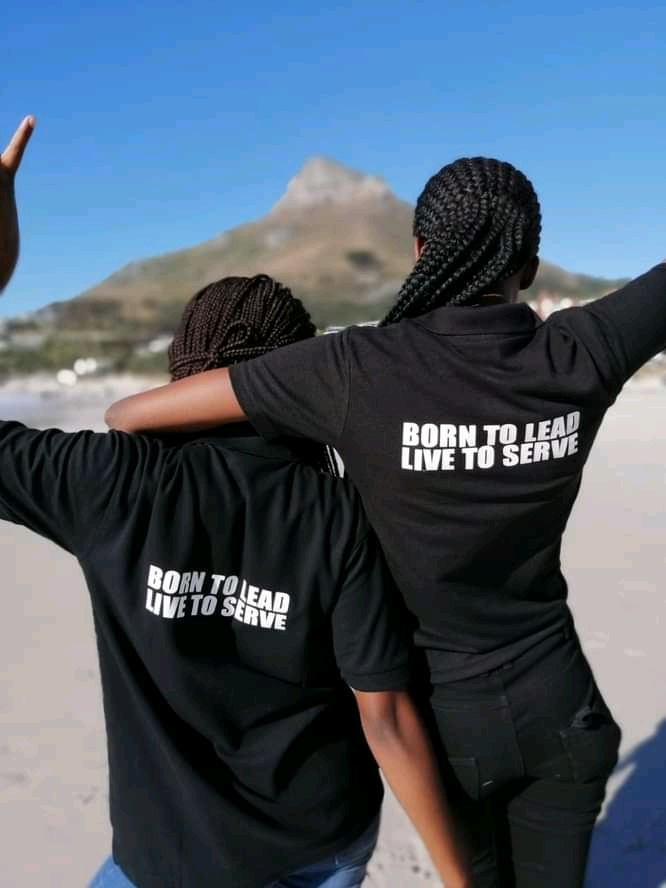

DRIVEN BY
FRUITFUL
PURPOSE

ABOUT US
Youth organization it is located in City of Cape Town-Western Cape. It i is a valid registered and prosperous under the leadership of Dumisan Thobela. It was established in 2016,the main purpose of all this is to take away teenagers from the street corners to pave for them the right path in life by bringing them to our space, where there's a variety of activities. We try to uplift our society hence we come from disadvantage environment. We have launch a lot of programes in our space,the latest one is FAKA UMNTANA ESIKOLWENI which we basically helping the matriculants to apply online for school in all provinces using the resources that we have, and that was successful. Some of the kids that were part of our online application registration are now placed in Universities.
With this one here we trying to help all Grade 12 students to achieve their academics goals, adapting the skills that we provide and develop a routine. we have a lot of resources that we believe that might be helpful to all South African childrens to prepare themselves for exams. And we also believe that studying becomes easier and more efficient if one gives dedication and sacrifice.
In order to to make your degree worth every last drop, solid studying skills will eventually promote better learning and help to alleviate stress.
Our vision is of a South Africa in which all our people will have access to lifelong learning, education and training opportunities, which will, in turn, contribute towards improving the quality of life and building a peaceful, prosperous and democratic South Africa.
Our mission is to provide leadership in the establishment of a South African education system for the 21st century.
OUR MOTTOR
I WILL STRIVE FOR RIGHTEOUSNESS,
I'M A RESPONSIBLE CITIZEN,
I WAS BORN A LEADER & I'M A LEADER!

"DO SOMETHING
TODAY THAT
YOUR FUTURE SELF
WILL THANK YOU FOR"